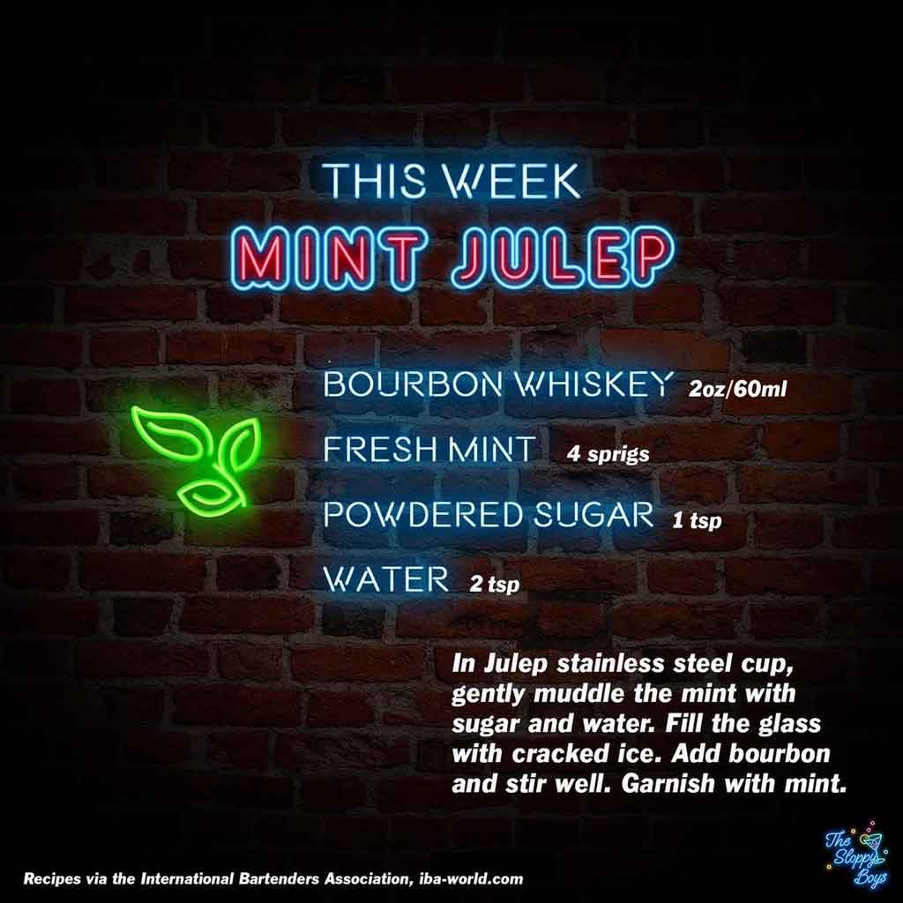

Mint Julep
Ingredients
- Bourbon Whiskey (2oz/60ml)
- Fresh Mint (4 sprigs)
- Powdered Sugar (1 tsp)
- Water (2 tsp)
Steps
- In Julep stainless steel cup, gently muddle the mint with sugar and water.
- Fill the glass with cracked ice.
- Add bourbon and stir well.
- Garnish with mint.
Notes